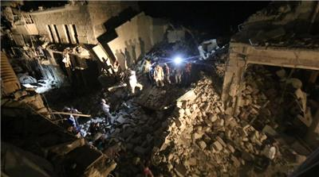
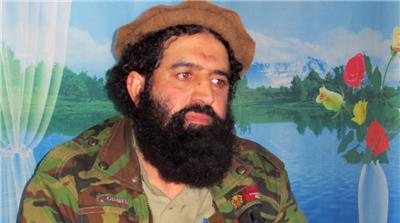
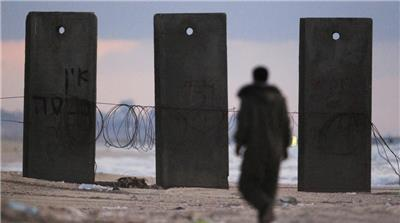
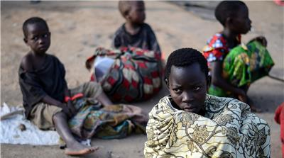
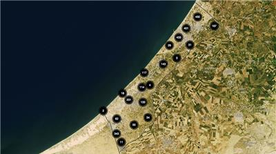
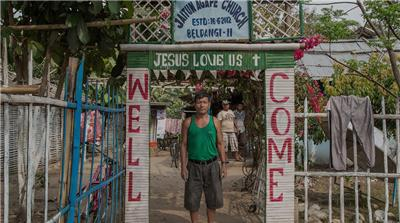
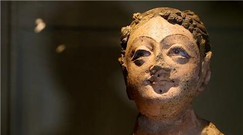

Former Saudi FM Prince Saud al-Faisal dies Prince Saud, appointed in 1975, was the world's longest serving foreign minister when he retired in April. 09 Jul 2015 19:27 GMT | Saudi Arabia, Middle East
Kerry: We will not rush into nuclear deal with Iran US Secretary of State John Kerry says, however, he is prepared to walk away if tough decisions are not made soon. 09 Jul 2015 19:13 GMT | Human Rights, War & Conflict, Politics, Iran, Hassan Rouhani
UN announces humanitarian truce in Yemen Ceasefire to start on Friday and last until July 17 as UN says it has pledges of commitments from warring sides. 09 Jul 2015 17:11 GMT | War & Conflict, Middle East, Yemen, UN
UK urges Britons to leave Tunisia over security threat Britain warns citizens that Tunisia was unable to provide 'adequate protection' following beach massacre in June. 09 Jul 2015 18:55 GMT | Middle East, Tunisia, Terror Alert
 Pregnant woman and children killed in Aleppo bombing At least 15 civilians, including four children, killed in Syrian air force barrel bomb attack in Aleppo, activists say. 09 Jul 2015 13:03 GMT | War & Conflict, Middle East, Syria, Syrian crisis
World powers and Iran 'on verge of nuclear deal' Officials say world powers and Iran are close to a nuclear deal that would end 12-year dispute over Tehran's ambitions. 09 Jul 2015 15:30 GMT | Human Rights, War & Conflict, Politics, Iran, Hassan Rouhani
 Top ISIL leader in Afghanistan 'killed in drone strike' Shahidullah Shahid killed along with five fighters in eastern Afghanistan, intelligence official says. 09 Jul 2015 17:41 GMT | War & Conflict, Humanitarian crises, Asia, Afghanistan, Drones
FIFA bans ex-official Blazer for life from football Blazer, a key figure in the FIFA corruption scandal, is found guilty by FIFA's ethics committee. 09 Jul 2015 12:14 GMT | FIFA, Football, Sport, Corruption
 Israel says two citizens held in Gaza An Israeli of Ethiopian origin is believed to be in Hamas captivity since September 2014. The second is an Israeli-Arab. 09 Jul 2015 09:16 GMT | Middle East, Israel, Gaza, Palestine
Anniversary and humanitarian crisis in South SudanHumanitarian crises Dire security situation in the country and thousands displaced on the eve of anniversary celebrations.
Chinese Filipinos: The ties that bind The world’s first Chinatown was established in the Philippine capital Manila in 1594. 08 Jul 2015 21:02 GMT | Asia Pacific, Philippines, China by Ted Regencia
 The refugee children of the Burundi crisis The crisis in Burundi as seen through the eyes of its young refugees. 07 Jul 2015 05:33 GMT | Human Rights, Politics, Refugees, Burundi, Tanzania by Azad Essa
Greece says 'No' Greeks vote against accepting new austerity measures in return for a new bailout package in national referendum. 06 Jul 2015 06:39 GMT | Politics, Europe, Greece, European Union by Ilena Kritikou
 Mapping Israel's strikes on Gaza An interactive map details the Israeli attacks on the Gaza Strip during the 50-day assault during July and August 2014. 08 Jul 2015 08:35 GMT | Interactive, War & Conflict, Gaza: After the war, Palestine, Israel
 Resettling Bhutan's Refugees "My Country is My Family" 08 Jul 2015 11:37 GMT | Politics, Human Rights, Bhutan, Nepal, United States
Al Jazeera WorldWomen Who Refuse to DieTwenty years after the Srebrenica massacre, four Bosnian women look to the future despite the pain of their past. War & Conflict, Human Rights, Europe
WitnessMiners shot downSouth Africa's miner strike led to the country's deadliest act of police violence since the end of apartheid.South Africa, Politics, Protests
Special SeriesAgora: The Greek financial crisisFrom Democracy to the Market - we examine the devastating impact of the Greek financial crisis on ordinary citizens.Business & Economy, Europe, Greece
WitnessSaving Mes AynakCan Afghan archaeologists take on the Chinese and the Taliban to save a 5,000-year-old archaeological site?Arts & Culture, Asia, Afghanistan